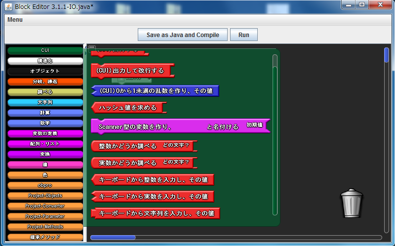
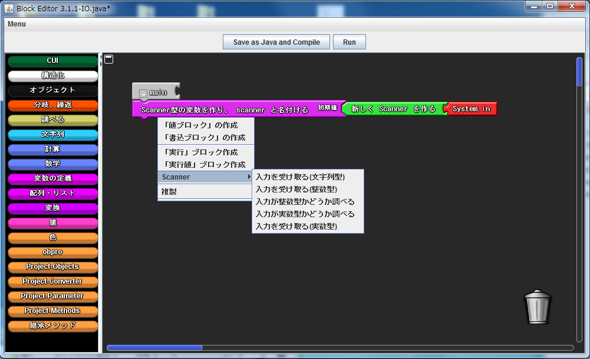
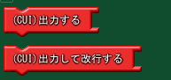

コンソールへ数字や文字などの入力をプログラム中で行うには，次の2つの方法があります．
ファクトリのCUIの部分にある「入力を受け取る」と書かれたブロックを利用すると，コンソール値を入力して利用することができます．

ファクトリのCUI部分にある「Scanner型のローカル変数を作り，...」というブロックを利用してもコンソールからの入力を利用することができます．
Scannerの変数宣言ブロックを右クリックすると，ポップアップメニューにScannerというのが表示されます．これをマウスオーバーすると，利用できるメソッドが表示されます．この中の「入力を受け取る」というのを利用すると，コンソールからの入力を行うことができます．

コンソールへ文字列を出力するには，次の2つのブロックが利用可能です．
